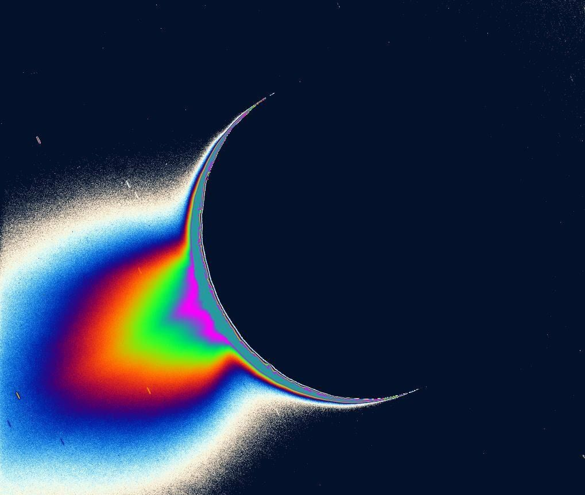
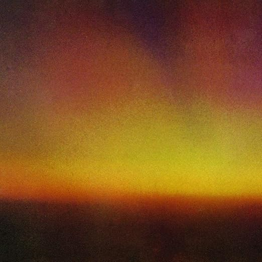
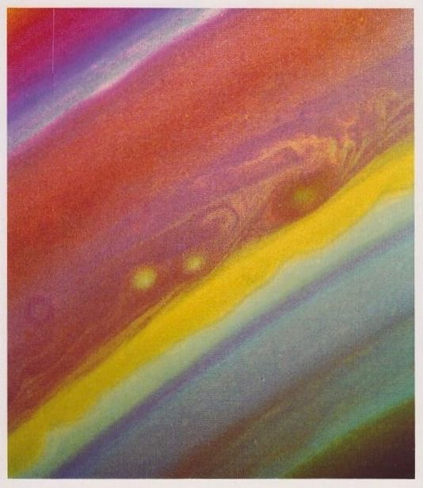
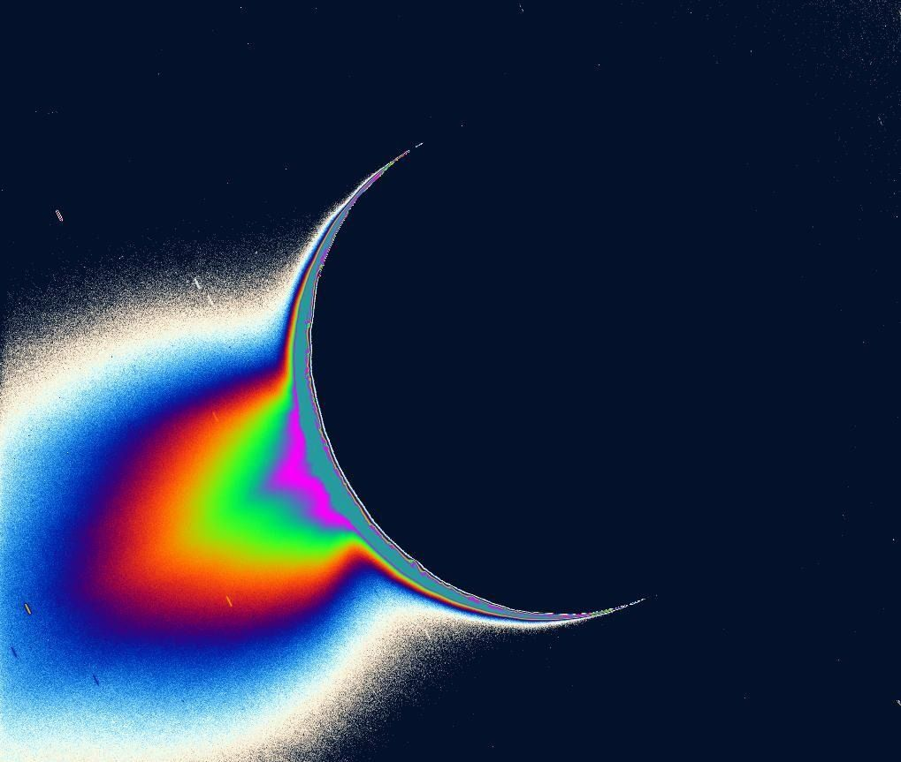
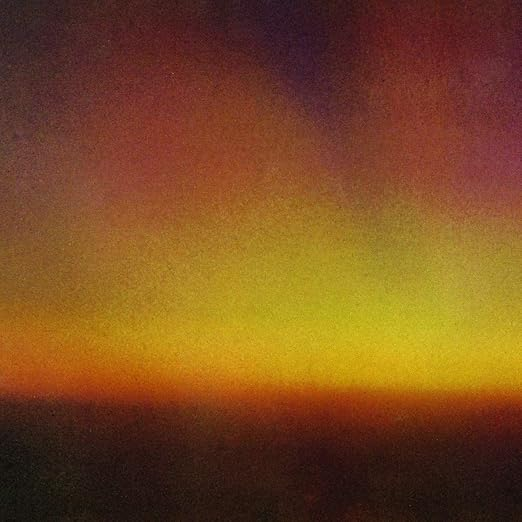
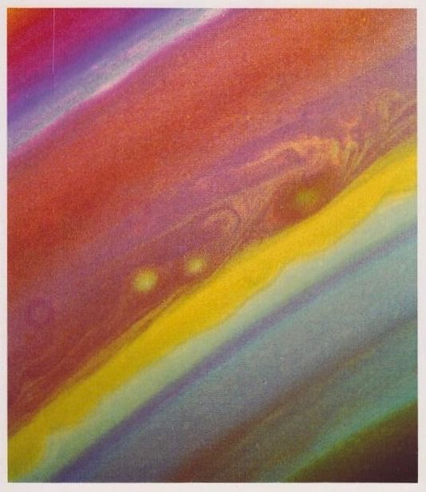
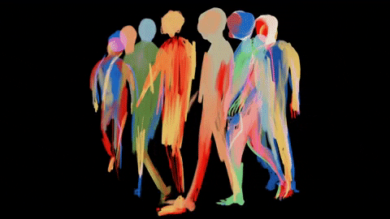
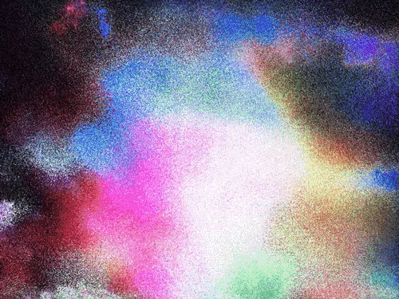
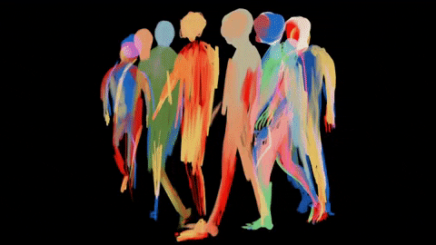
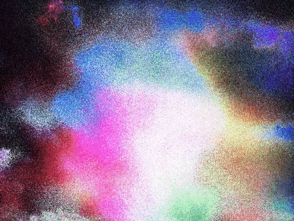

 



If there's another
universe
Please make some noise (Noise)
Give me a sign (Sign)
This can't be
life
If there's a point to losing love
Repeating pain (Why?)
It's all the same (Same)
I hate this place
Stuck in this paradigm
Don't believe in paradise
This must be what Hell is like
There's got to be more, got to be more
Sick of this head of mine
Intrusive thoughts, they paralyze
Nirvana's not as advertised
There's got to be more, been here before
Ooh… life's better on Saturn
Got to break this pattern
Of floating away
Ooh… find something worth saving
It's all for the taking
I always say
I'll be better on Saturn
None of this matters
Dreaming of Saturn
If karma's really real
How am I still here?
Just seems so unfair
If there's a point to being good
Then where's my reward?
The good die young and poor
I gave it all I could